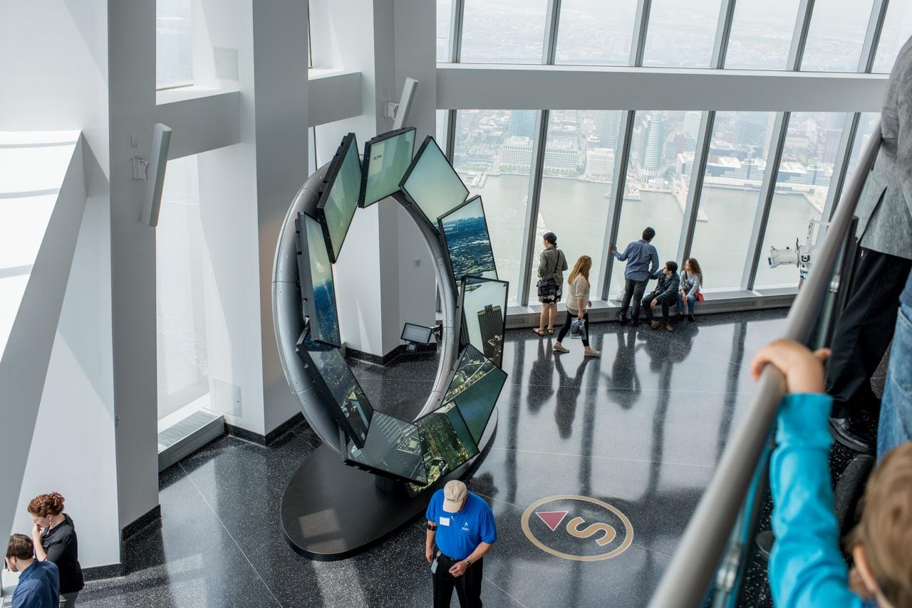

|
City Pulse, an installation consisting of a set of ten monitors uniquely arranged in a ring, allows tour guides to engage with visitors to One World Observatory, pointing out city landmarks, providing a virtual tour of city culture & history, and weave in updates from relevant social media channels. A custom-designed gesture control system allows staff members wearing an armband to summon & manipulate media across the screens to enhance their stories about nightlife, parks, kids' activies, sports, and more as they engage with visitors and respond to audience questions. I co-developed City Pulse while working for Local Projects. My role in this project was a consultant and front-end developer, working mostely on user interfaces and algorithmic animations. |
|  Photograph by Roy Rochlin |
In collabortion with
|